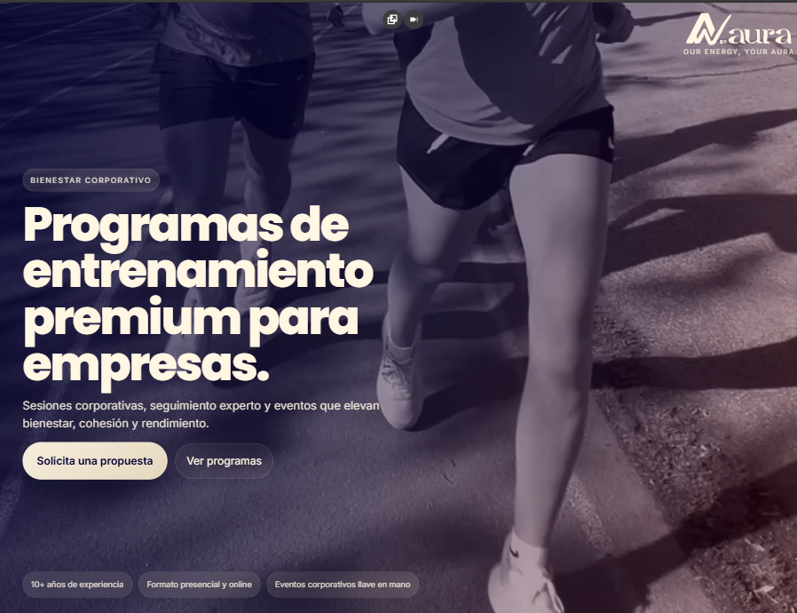
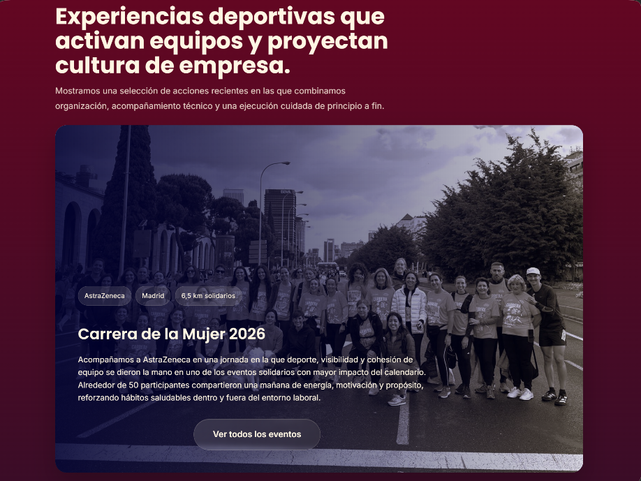
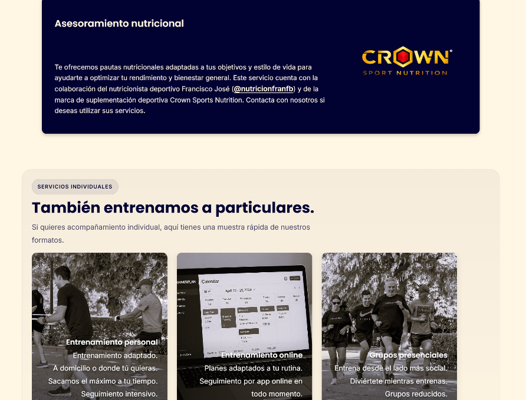

01
Caso webBy Aura
Identidad visual + presencia digital
Reorganicé el relato y reduje el ruido visual para que servicios, filosofía y forma de contacto se entendieran en un solo recorrido.
La marca no se había creado todavía. No tenía presencia digital previa, ni identidad visual definida. Era una marca recién nacida.
Crear una identidad visual y una presencia digital desde cero que reflejara los valores de la marca y generara confianza en los usuarios. Desde el logo, la tipografía y la paleta de colores hasta la estructura del sitio web.
Priorizar la claridad y la coherencia en todos los elementos de la marca, desde la identidad visual hasta la experiencia digital para dar mucho valor a su mensaje
Una presencia serena y consistente que conecta identidad, contenido y producto en un mismo espacio, generando una experiencia de marca coherente y confiable.



Trabajo realizado
- Dirección visual precisa y coherente
- Un relato de marca ordenado
- Una web pensada como presentación clara de la marca
Lo que aporta
- Una percepción de marca sobria y segura
- Servicios, filosofía y contacto conectados en un único recorrido
- Una base visual consistente para seguir creciendo